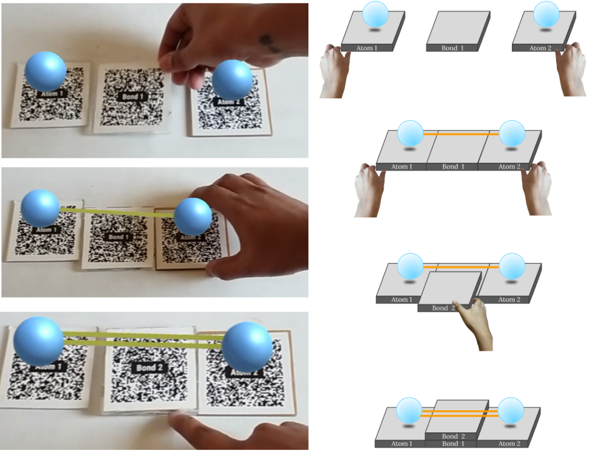

Representation of strength of bonds with heaviness of AR markers
Description:
In here we would have 2 atom markers and 3 bond markers. Stacking up of bond markers will make
multiple
bonds between
atoms. Higher the stack, higher the weight of bond markers and thus more the number of bonds.
Created by: Anurag Kumar Singh
Email: anurag27k@gmail.com
Date created: 27 May 2022
Version: 1.0
Created by: Anurag Kumar Singh
Email: anurag27k@gmail.com
Date created: 27 May 2022
Version: 1.0
Code files:
Prototype2.cs ↓
Other files:
QR21-25 markers ↓
Prerequisites:
How to Create Image Targets: YouTube Link 🔗
Steps:
1. Add the below markers in the Assets folder:
- Atom1(QR21)
- Atom2(QR22)
- Bond1(QR23)
- Bond1(QR24)
- Bond1(QR25)

2. Create 5 Image Targets : Vuforia Engine>Image Target

3. Add a sphere under Atom1 marker and Atom2 marker

4. Create a new material in Assets folder

5. Add material to the spheres created
6. Resize the spheres

7. Add capsule collider to the spheres and adjust values

8. Create empty objects under Bond1, Bond2 and Bond3 markers

9. Add capsule collider to the Bond markers and adjust values

10. Add the script Prototype2.cs (mentioned above) to the assets folder
11. Drag the script to all the empty objects in Bond1, Bond2 and Bond3 markers

12. Press Play and it should work!
Here we have two markers havingatoms(withlabelsAtom1 and Atom2) and a marker with the label Bond1.Whenboth the atoms are brought closer to the Bond 1 marker the marker gets triggered and a single bond is activated. The Bond 1 marker is transparent in nature and has QR code printed in black. When the Bond 2 marker (which is also transparent) is placed above the Bond 1 marker, QRs get merged and a new QRisusedforcreating2bondsbetween the atoms. Attachmentisalsosupportedbymagnets,which guide the user. Similarly when the Bond 3 marker isplaced above these two, a new QR code is formed which represents the 3rd bond between the atoms. The image below shows the interaction.

In the above feature we have observed 2 kinds of interactions:
- Atom markers coming close to the bond marker to form a bond. Bond marker triggers the bond between the two atom markers. Thus change in proximity brings forward change in 2 separate entities.
- Placement of markers over each other by using the concept of transparency in order to form a completely new marker which functions differently
- Weight of the marker is representative of the strength of the bond.
Created by:
Anurag Kumar Singh
anurag27k@gmail.com
Chennai, India